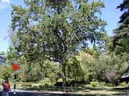
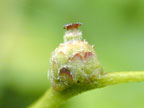
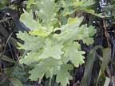
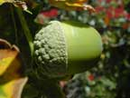
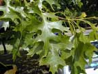
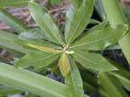

Oak
Quercus robur (and other species)
Other names
English oak
Description
Large deciduous trees up to 30m tall, rarely shrubs, with 2 - 4 characteristically shaped leaves clustered at tips of all twigs. Bears acorns. Some exotic species are evergreen, eg, the holm oak, Q. ilex. The photos are English oak, except where indicated.
Similar plants
Although the English oak is most common here; there are about 40 species of oak in New Zealand. Most oak trees in North America and Europe are considered toxic.
Distribution
Throughout NZ, usually as single trees or small stands.
Toxin
Young leaves and especially swollen or unripe acorns contain large amounts of tannins and gallotannins which bind to sulphydryl groups. In the spring buds are toxic when eaten by hungry animals. In the autumn acorns cause poisoning. Unripe acorns often fall to the ground in high winds and often become infected with fungi which may cause toxicity. The toxic elements, the tannins and gallotannins or their metabolites cause gastrointestinal and renal dysfunction.
Species affected
All species but cattle and sheep in particular. Pigs appear to be relatively resistant; ripe acorns used to be used for fattening pigs.
Clinical signs acute
Clinical signs do not usually appear until a few days after the animals start eating acorns. Initially, anorexia, signs of abdominal pain, depression, emaciation, rumen stasis and constipation. Tenesmus, ammonia smelling breath, serous ocular, nasal or oral discharges, pale mucus membranes and dry muzzle are other signs. Constipation is followed by mucoid to haemorrhagic diarrhoea. Polyuria and polydypsia, urine may be dark in colour but is usually pale. Severe abdominal pain with straining and groaning. Abdominal distension due to ascites. On rectal palpation acorn pieces may be felt in the rumen and intestine. Acorn remnants may be found in the faeces. Clinical signs of renal failure.
Clinical signs chronic
Post mortem signs
Haemorrhagic gastroenteritis, anywhere from the rumen to the rectum with clots occasionally Iying free within the intestinal rumen. Glomerulonephritis, pale swollen kidney (occasionally pale and shrunken if syndrome has been of long duration.), perirenal oedema, petechiae in subscapular surface of kidney. Excess fluid may be present in serous cavities, e.g. peritoneal and thorax. Oedema of lower parts of the body, pulmonary oedema and pneumonia. Carcase smells very uraemic. Subcutaneous oedema, haemorrhage and ascites, especially in sheep. Large numbers of acorns are found in the rumen. Sometimes oesophageal and ruminal ulceration.
Diagnosis
History of exposure, clinical signs and histopathological examination of the kidney. Increased BUN, if blood levels exceed 50 mmol/L the animal is likely to die. Recovering animals may have elevated BUN for up to 3 weeks (10 20 mmol/L).
Differential diagnosis
pigweed (Amaranthus species) poisonings. Aminoglycoside antibiotic poisoning.
Treatment
Largely symptomatic. Do not give saline purgatives due to kidney damage. Milk and mucilages can act as gut protectives. Liquid paraffin or oleaginous purgatives may hasten acorn removal. Appetite stimulants and fluid therapy. Calcium hydroxide may help reduce absorption of tannins.
Prognosis
Clinical recovery usually within 60 days. Clinical recovery is rare if renal dysfunction is severe.
Prevention
References
Conner H.E. The Poisonous Plants In New Zealand. 1992. GP Publications Ltd, Wellington
Cooper M R, Johnson A W. Poisonous Plants and Fungi in Britan: Animals and Human Poisoning. Her Majesty’s Stationary Office. London. 1998
Parton K, Bruere A.N. and Chambers J.P. Veterinary Clinical Toxicology, 2nd ed. 2001. Veterinary Continuing Education Publication No. 208
Hill F. (1998). Plant poisonings in cattle. Vetscript XI. 9:14 15.
Holliman, A. (1985). Acorn poisoning in ruminants. Vet.Rec. 116:546.
Mullins, J. (1955). Acorn poisoning in sheep. N Z vet J. 3:159
Panciera, R.J. (1978). Oak Poisoning of Cattle: Effects of Poisonous Plants on Livestock. Eds. R.F. Keeler, K.P. Van Kampden and I.E. James, New York, London, Academic Press. pp. 499 506.
Robins, J.H. and Shapcott, R. (1954). Acorn Poisoning in Sheep. N Z vet J. 2:55.
Wiseman, A. and Thompson, D. (1984). Acorn poisoning. Vet.Rec. 115: 605.
Surveillance (1975) 2(2):24 Acorns (cattle)
Surveillance (1975) 2(4):21 Deer cases of interest
Surveillance (1976) 3(3): 7 Acorn poisoning (calves)
Surveillance (1981) 8(2):20 Acorn poisoning (sheep)
Surveillance (1983) 10(3):27 Acorn poisoning (cattle & sheep)
Surveillance (1991) 18(4):33 Acorn poisoning in cattle
Surveillance (1993) 20(3):29 Acorn poisoning in Simmental cattle
Surveillance (2006) 33(3):7 Acorn poisoning in sheep
Surveillance (2006) 33(3):9 Acorn poisoning in cattle
" (1994) 21(3):31 Acorn poisoning in calves
|  small tree |
 |
|
|
 |
|
|
|
 |
||
|
 |
 |
|